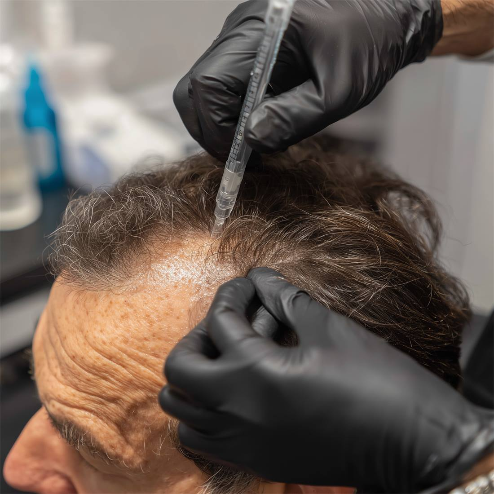
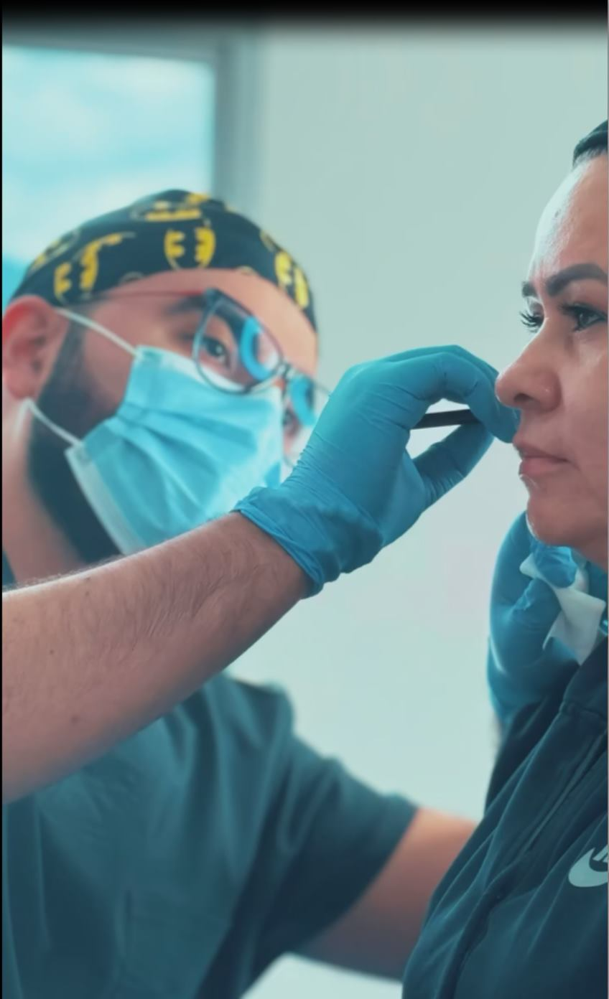
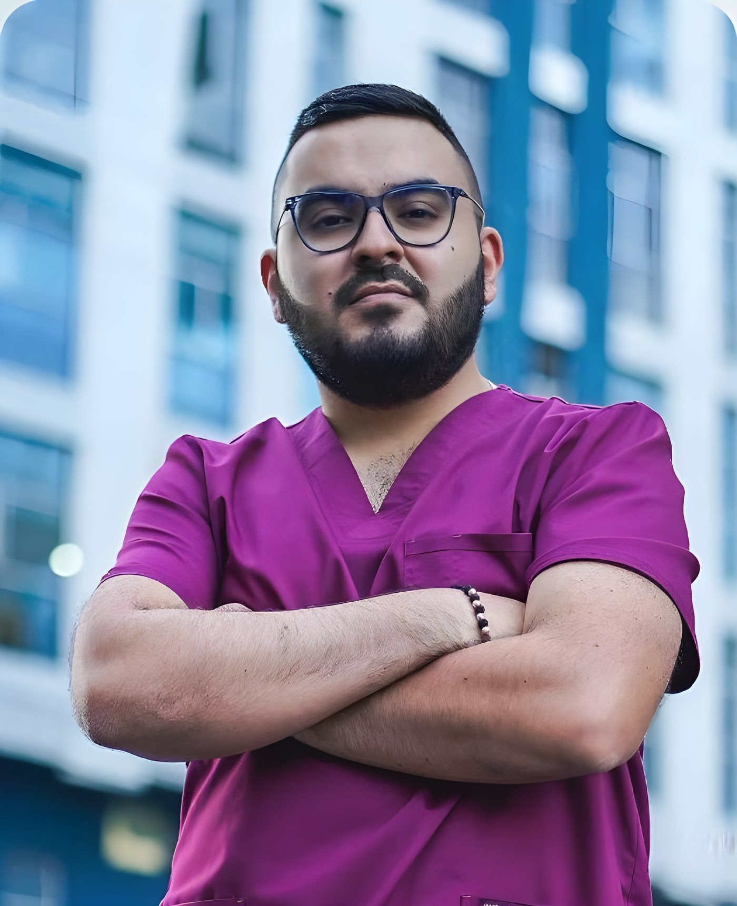
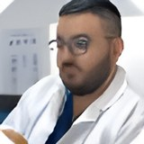
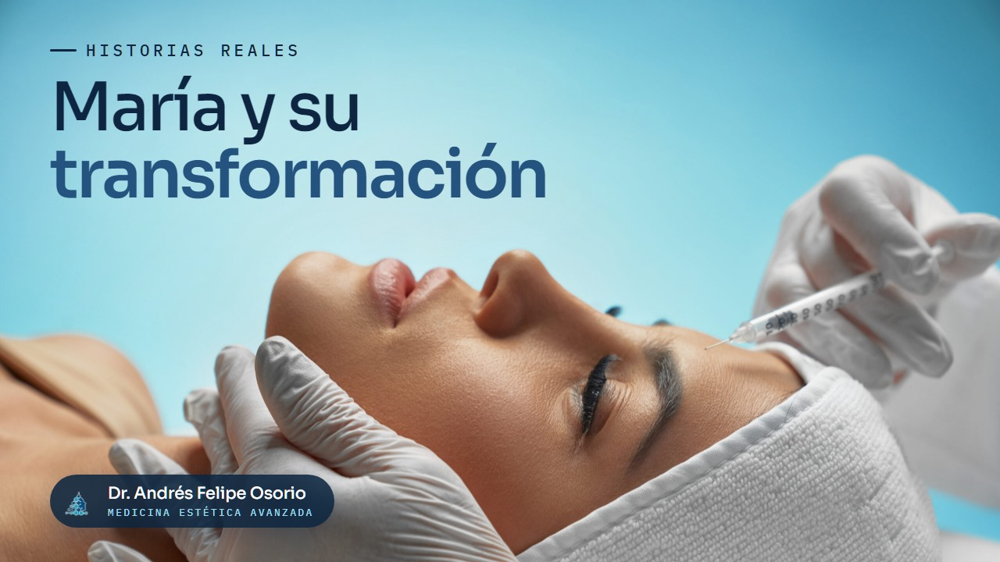

01
Terapia Capilar
No todas las caídas son iguales. Primero evaluamos cuál es la tuya.
- PRP capilar
- Mesoterapia
- Microinyecciones
- Seguimiento
Atención médica integral para sentirte bien contigo mismo.
Sentirte bien empieza por entender lo que realmente necesita tu cuerpo.

No todas las caídas son iguales. Primero evaluamos cuál es la tuya.
Regeneración con criterio médico, no cosmético.

Energía, digestión, hormonas y sueño. Buscamos la causa, no el síntoma.
Si tu caso no encaja en ninguno de los anteriores, escríbeme.


Dr. Andrés Felipe Osorio
Mi camino hacia la medicina integrativa no comenzó en un aula, sino en mi propio cuerpo. Durante años enfrenté problemas de salud que los tratamientos convencionales solo lograban aplacar por un tiempo.
Silenciar los síntomas no es lo mismo que sanar.
Esa experiencia me llevó a especializarme en distintas áreas de la medicina y el bienestar, y define hoy la forma en que acompaño a cada paciente.
Historias reales de transformación

Llegó con dolor articular, síndrome del túnel carpiano, migrañas, problemas de visión y molestias en el tobillo. Con bioplasma y un enfoque terapéutico integral ha experimentado una mejoría significativa en todas esas áreas.
La combinación de varios tratamientos integrativos le permitió mejorar su digestión, sentirse más saludable y bajar de peso. Incluso resolvió una rosácea con un peeling de piel, y destaca la comodidad de cada procedimiento.
Después de dos años de intentos fallidos con tratamientos tradicionales, revirtió una afección de colon con los procedimientos integrativos del doctor Osorio. Menciona la comodidad que sintió y el profesionalismo del acompañamiento.
Del blog
Notas sobre medicina integrativa, escritas para entender una decisión clínica, no para vender un procedimiento.
Más de 7 años de experiencia
El primer paso es una conversación.
Agende tu cita →